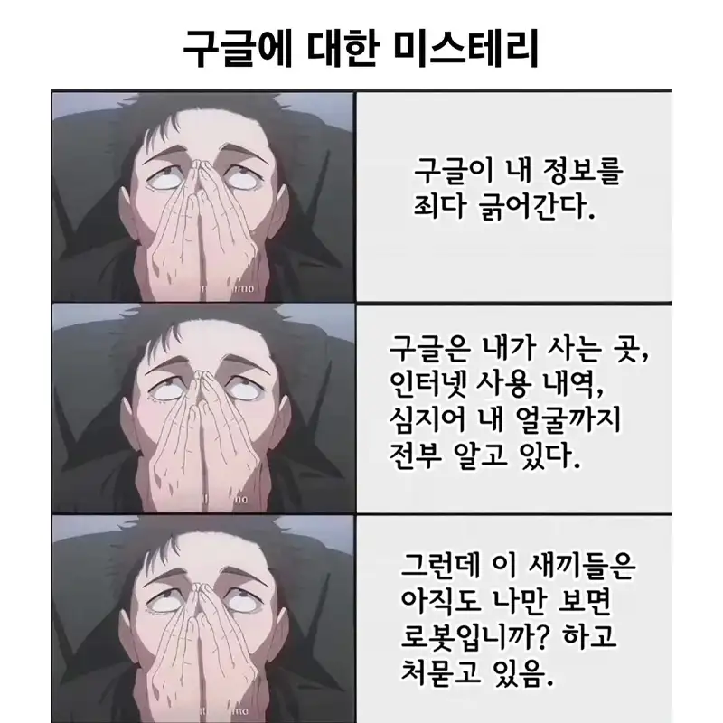

구글에 대한 미스테리.jpg
댓글
슬렛지 감별기를 가져오도록

모르는척 너스레 떠는거지
그래서 형식적으로 체크 하나만하잖아
지가 아직도 로봇 아닌줄 안대
ㅋㅋ이제 진짜 누가 로봇이지
개붕로봇 고장났네
사람 아니야

(아직도)로봇이 아닙니까?
발톱을 먹은 쥐입니까?

니가 인간인 건 이미 알고 있다 이럴 순 없으니 ㅋㅋ
통속의 뇌만 있는 로봇이 맞으니까..
'언제까지 거짓말 하나 보자'
눈치가 있다면 지금이라도...
언제부턴가 로봇으로 바뀌어 있는 사람이 있을지도 모르지 ㅋㅋㅋ.
이상하네... 왜 체크가 안 되지?
내가 신스 였다면?